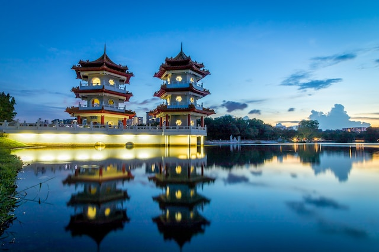
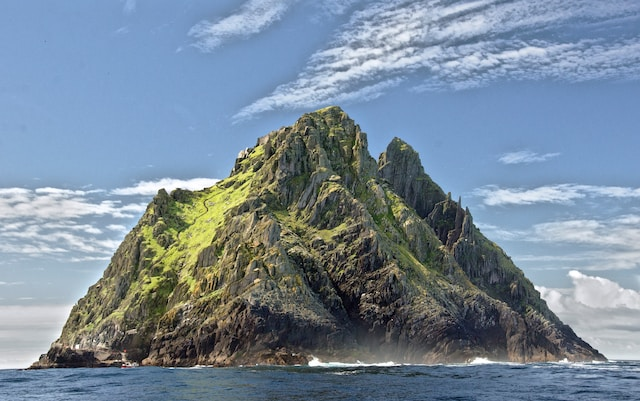
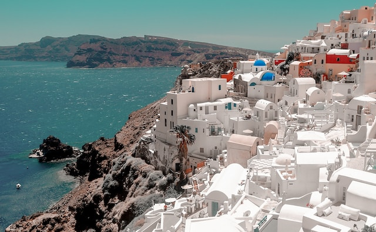
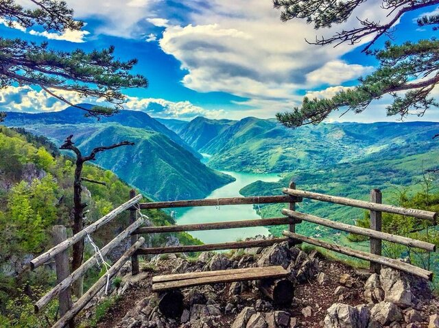

Dobrodošli na nas blog posvećen avanturama i putovanjima! Mi smo Websites Workshop turisticka agencija, i mi smo strastveni putnici i istraživači sa dubokom ljubavlju prema otkrivanju svih lepota koje svet ima da ponudi. Kroz nase iskustvo putovanja širom sveta, odlučili smo da podelim svoje priče sa vama, savete i inspiraciju kako bismo vas podstakli da se upustite u sopstvene nezaboravne avanture.
Daleke destinacije
Za mene su daleke destinacije više od samo geografskih tačaka. One predstavljaju kapije ka čudesima drugih kultura, prirodnim lepotama koje oduzimaju dah i iskustvima koja obogaćuju dušu. Kroz svoje priče, želim vam preneti osećaj uzbuđenja koji se javlja kada koraknete na nepoznato tlo, spoznate raznolikost sveta i otvorite svoj um za nove perspektive.
Singapur
Singapur, fascinantna metropola jugoistočne Azije, sjedinjuje modernu urbanu estetiku sa bogatom kulturom. Ovaj mali grad-država iznenađuje posetioce svojim visokotehnološkim inovacijama, besprekornom infrastrukturom i šarenolikim gastronomskim scenama.

Slika 2: Budisticki hram u Singapuru
Veliki kanjon
Veliki kanjon, zadivljujući prirodni fenomen smešten u Arizoni, SAD, predstavlja spektakularnu sliku geološke istorije i prirodne lepote. Njegove ogromne mermerizirane stene i duboke provalije pružaju posmatračima jedinstvenu priliku da osete snagu vekovima oblikovane prirode.
Slika 3: Veliki kanjon
Evropa
Evropa, kontinent bogate istorije i raznolike kulture, obuhvata različite zemlje i jezike koji se prepliću u harmoničnom mozaiku. Od impozantnih katedrala u Evropskim prestonicama do slikovitih sela na italijanskim brežuljcima, Evropa očarava posetioce svojom estetikom i nasleđem.
Irska
U srcu Irske, ostrva sa bezbrojnim nijansama zelene, leži bogata istorija i mistika. Irska je dom živahne muzičke scene, priča o vilenjacima i legendi o selima na ivici litica. Posetioci se mogu izgubiti u prelepim pejzažima, poput Antrim obale ili Zelenog puta, i istražiti istorijske gradove poput Dublina, koji odišu duhom prošlih vekova.

Slika 4: Irska, Zeleni greben
Grcka Ostrva
Grčka ostrva, blistavi dragulji Egejskog i Jonskog mora, nude raznolike avanture i očaravajuće lepote. Beli kubusi kuća u kontrastu sa plavim vodama stvaraju prepoznatljivu vizuelnu simfoniju na mestima kao što su Santorini i Mikonos. Svako ostrvo ima svoj jedinstveni karakter, od drevnih ruševina u Antičkoj Olimpiji do bujnih vinskih vinograda na Krfu, čineći Grčka ostrva magnetom za putnike željne raznolikosti.

Slika 5: Grcka, Tasos
Srbija
Srbija, zemlja kontrasta smeštena na raskrsnici Balkana, ima bogatu istoriju koja se ogleda u utvrđenim gradovima i spomenicima. Posetioci mogu istražiti vibrirajući umetnički i kulturni život u Beogradu, uživati u tradicionalnoj srpskoj kuhinji i doživeti gostoljubivost lokalnih stanovnika. Srbija takođe obiluje prirodnim lepotama, od planinskih vrhova do rečnih dolina, pružajući raznovrsne mogućnosti za aktivni odmor.
Tara
Planina Tara, biserna prirodna lepota zapadne Srbije, očarava posetioce svojom netaknutom prirodom i bogatstvom biodiverziteta. Nacionalni park Tara, sa svojim šumama bukvi, raznolikim životinjskim vrstama i dubokim kanjonima, pruža idealno okruženje za ljubitelje prirode i avanturiste. Pogled s vidikovca "Banjska stena" na prostranost Drine i okolnih šuma ostavlja neizbrisiv utisak i čini Taru izuzetnom destinacijom za planinarenje i opuštanje u prirodnom okruženju.

Slika 6: Tara, vidikovac
Uvac
Uvac, slikovita reka u zapadnom delu Srbije, krije jedan od najlepših prirodnih fenomena - specifične meandre i kanjone koji su stvorili pejzaž jedinstvene lepote. Njegova meandrirajuća voda i okolni stenoviti kanjoni pružaju spektakularne prizore, posebno tokom zalaska sunca. Posetioci mogu uživati u vožnji čamcem kroz ovaj prirodni rezervat i posmatrati beloglave supove kako lete iznad kanjona, stvarajući nezaboravno iskustvo u netaknutoj prirodi.